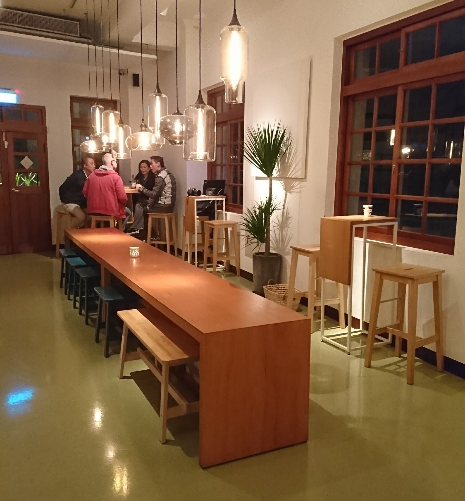
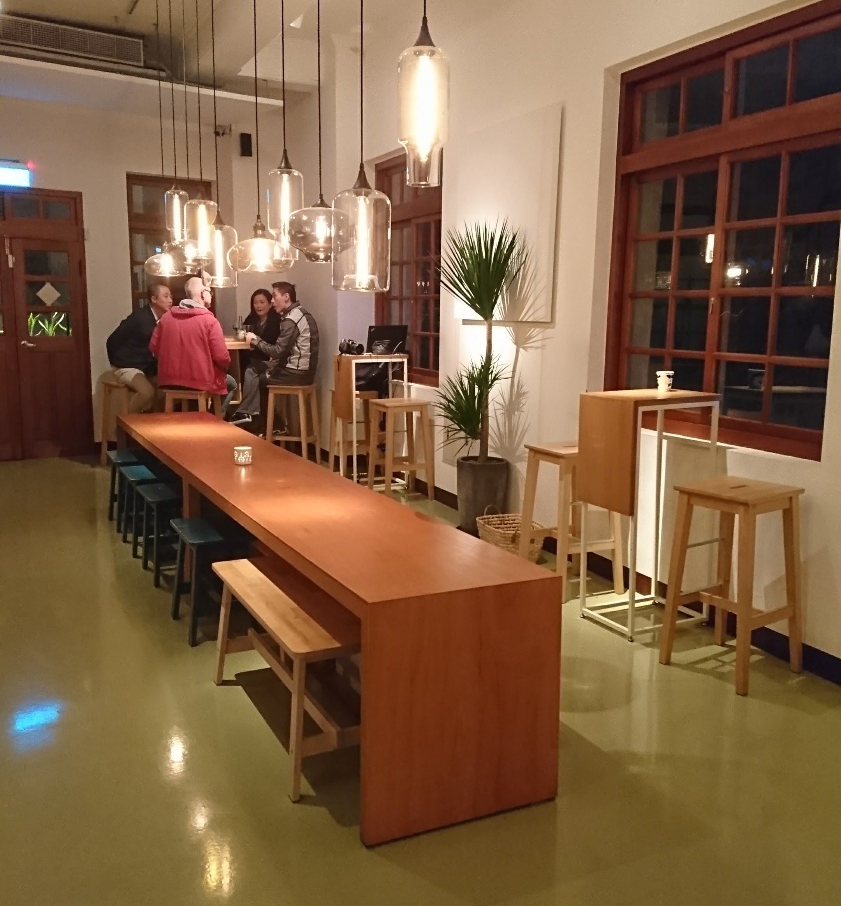
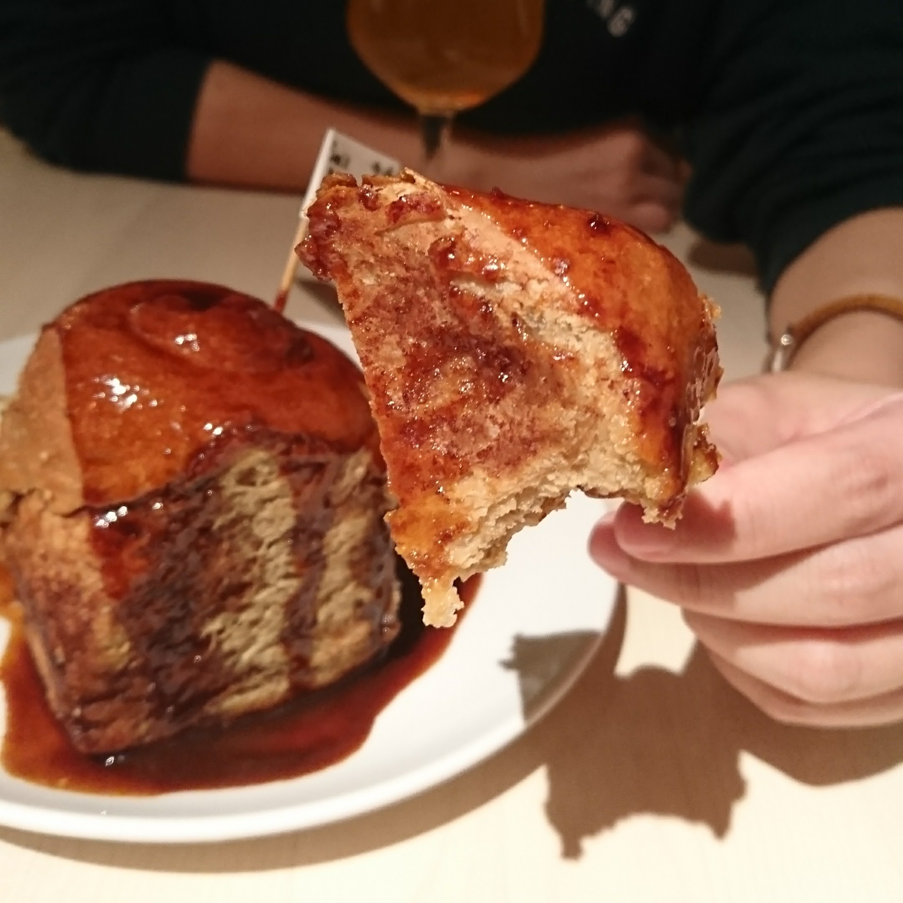
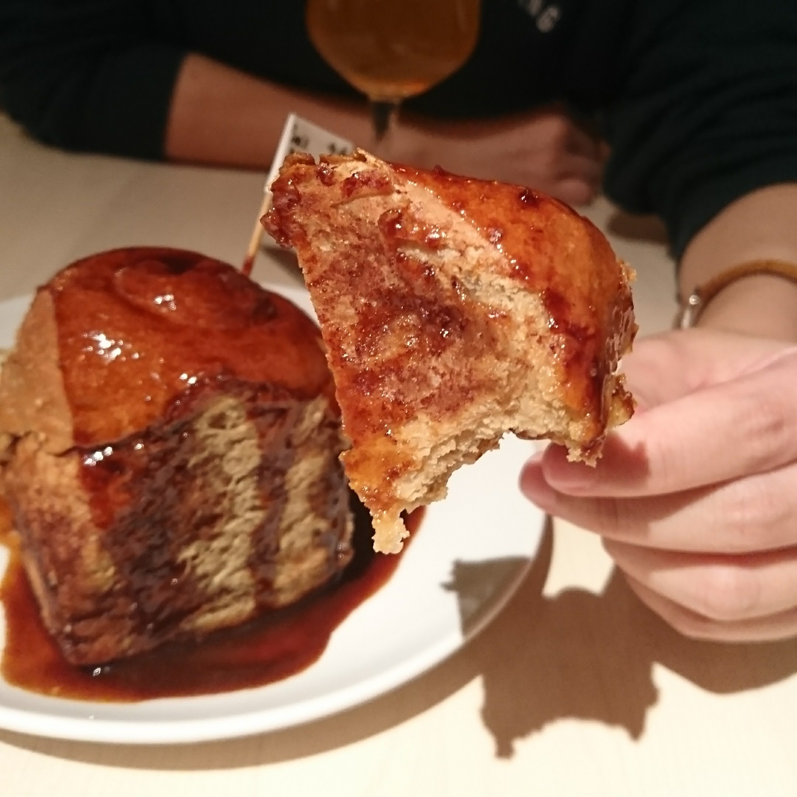
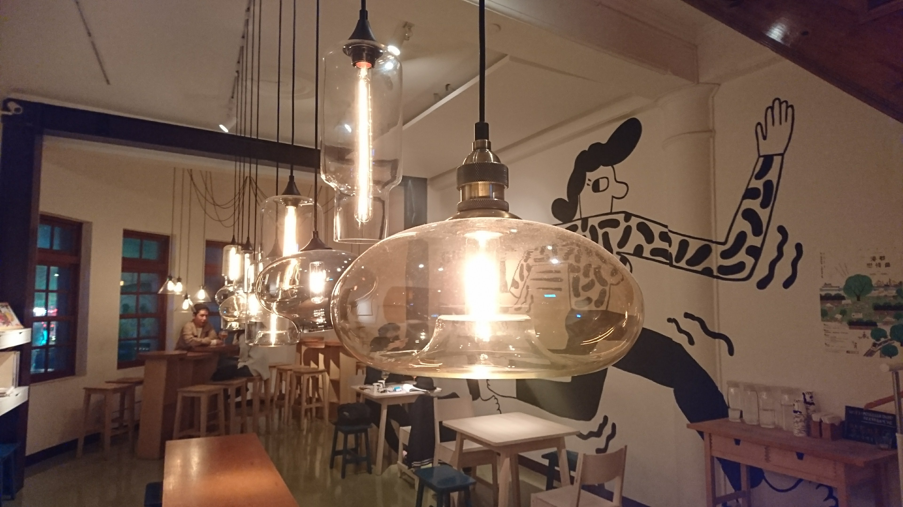
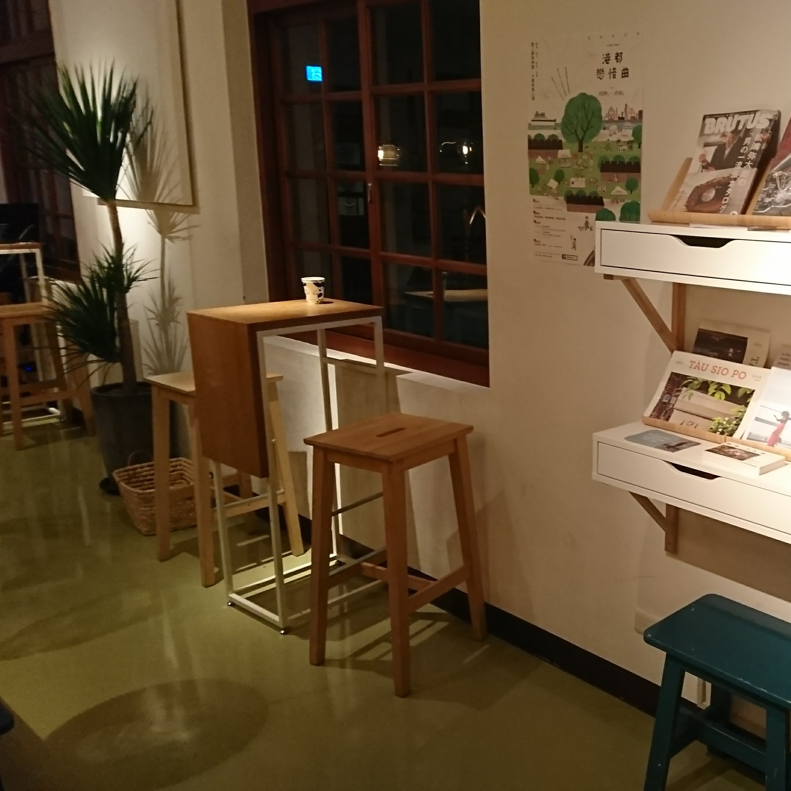
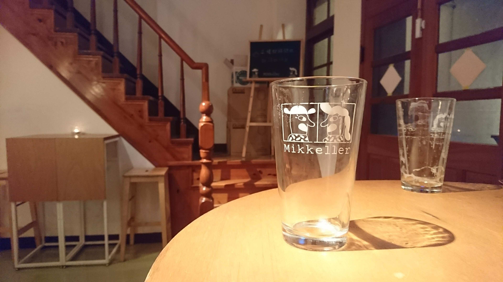

【捷運北門】米凱樂 藏在老洋房裡的小酒窩
▋舊城區的飲酒新選擇
米凱樂精釀啤酒吧位於大稻埕一棟美美的三層洋樓中，不同於多數的酒吧，這裡的光線明亮，加上大量的木頭內裝，是間集復古與新潮於一身的酒館。
 

▋不知道怎麼選？試飲先！
先來看個menu，當然是看不懂因為拍太糊了。不過重點是！這裏有提供試飲，可以跟店員說你比較想要或不想要怎樣的酒，實在是選擇障礙者的福音。
只是臉皮薄如我喝到第二種就決定了最後就覺得沒有很好喝，建議大家不要輕易妥協。
吃的也不用擔心，熱食就兩個選項，割包和肉桂捲，自己決定。

最後點了INHALER和用來寫食記解飢的肉桂捲。

INHALER聞起來非常的好，甜甜的果香味，但是喝起來微苦，我自己是沒有很愛，不過人生難免如此，送他一個中指。
肉桂捲是鹹花生（另一間咖啡店）做的，蠻大份，兩個人分食很剛好。
酥酥香香，滾上滿滿的肉桂醬汁，趁熱吃最好吃。
 

▋怎麼拍都美的內裝
禮拜天晚上，客人沒幾組正好拍，要拍照的人可把握此黃金時間。




總結，酒好不好喝見仁見智，不過米凱樂的環境很美，在文青味中還帶點檜木香，既新潮又不失古樸。
如果三兩好友想要找個地方聚會聊天，去膩了咖啡廳，米凱樂會是個不錯的選擇。